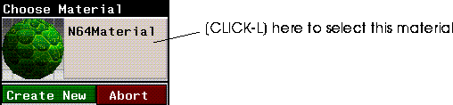

[N-World Contents] [Book Contents] [Prev] [Next] [Index]
Using N64 Express
This chapter outlines briefly the procedure for exporting objects, textures, and animation to the Nintendo 64 platform
Using N64 Express
Hardware Requirements
In addition to a Nintendo 64, the N64 Express requires a Nintendo 64 development board set, Rev. 2.0.
Software Requirements
In addition to the files supplied by Nichimen Graphics, you need the Nintendo 64 Development Environment, Rev. 2.0e, which is distributed by Nintendo.
Capabilities
N64 Express supports conversion of game content data for real-time display on the Nintendo 64. This includes:
Nintendo 64 Express Parameters
Geometry
Texture
Animation
The N64 Express Process
N64 Express is designed to provide real-time feedback to you, the artist, about how your objects will look on the Nintendo 64. The speed with which objects can be ported from N·World to the Nintendo 64 allows for real-time, interactive design of objects and materials. You can export object geometry, materials, and animation data to the Nintendo 64.
Here's how the process works:
1. Model your objects in N-Geometry.
2. Create materials in the Attributes Editor.
- Materials you wish to use in the Nintendo 64 should be defined using the N64 render domain, whose attributes and parameters are described in the next section.
3. Use the Browser to associate materials and mappers with your objects.
4. Redisplay your 3D object in N·World in real time, using the SGI GL Shade hardware renderer.
- Redisplay allows you to get your objects looking the way you want on the SGI, before you export anything.
5. Export and display the objects on the Nintendo 64.
- With a simple click of a button, send your object to the Nintendo 64. You can fine tune it's appearance on the game platform itself by adjusting attributes and sending it over again.
6. When everything looks right, you can write the object and it's associated materials to file with a simple command.
- When you export an object to N64 format, N64 Express automatically creates .c and .h object description files for your object.
7. If you wish to animate these objects, create the animation in N-Dynamics, adding a Record Animation channel at the end of the script.
- The Nintendo animation data are generated and stored in memory on the SGI until you write them to file.
8. After running the script, (CLICK-L) on Export in the Dynamics menu.
- You can either preview the animation directly on the N64, or create the ASCII .c and .h files and write them to disk for compilation and display later.
Things to Remember about N64 Express
Preview vs. Export
When you preview an object or an animation, the data are compiled and sent to the Nintendo directly. When you export an object, the data are written to ASCII files, which can then be compiled and displayed on the Nintendo 64.
Faces Larger than 4K
If your object contains faces that use more than 4K of texture map memory, an error message appears, telling you that such faces exist on your object. The object is not sent over, and the faces are collected in N-Geometry for you.
With the faces still selected, (Shift-L) on the collection and use the Cut command to cut the individual faces to a smaller size (select pairs of vertices to cut the face). See the N-Geometry Reference Guide for more information about using the cut commands.
Previewing
The following section assumes that your hardware (the SGI, a monitor, and the N64 development board are correctly installed and configured. If you choose, you can direct output to an SGI Capture window. To do so:
1. Open a UNIX shell and type in the following command.
unix%capture &
2. When the Capture window appears, (CLICK-L) on Tools>Video Panel.
- The Video control panel appears:
Figure 1.1 Configuring the Capture screen
3. Change the Default In: parameter to Analog Source.
- Now, objects you're previewing on the Sega Saturn will appear in this capture window.
Previewing an Object on the Nintendo 64
The following section is a brief tutorial describing exactly how to create an object, assign materials to it, and then view it on the Nintendo 64.
Before we begin, however, you'll need to copy the source texture map files to a directory for which you have write permissions.
1. Copy the following files a directory for which you have write permission.
- /usr/local/ngc/presets/maps/Green_Snake_B.tpx
- During this tutorial we'll refer to this file as Green_Snake_B.tpx.
- Note: Often your home directory, or a directory you use to store your own work is a good choice. If you have any questions, ask your system administrator for help.
2. In the GeoMenus, (CLICK-L) on New Object>sphere.
3. In the GeoMenus, (CLICK-L) on New Object>mapper.
- Create a spherical mapper, and set the bounds source for the mapper to your new sphere. Your mapper parameters should look like this:
Figure 1.2 Spherical mapper parameters
4. In the GeoMenus, (CLICK-L) on Shading, then select your object from the menu which appears.
Figure 1.3 Toggling shading for Geometry objects
5. Open the Browser, then (CLICK-L) on the Geo button.
- The Browser shows all the objects currently loaded into Geometry, and also provides a visual representation of object hierarchy:
Figure 1.4 The Browser display
6. (CLICK-R) over your object in the Browser display.
- The Operations menu for your sphere appears.
Figure 1.5 The Browser Operations menu for sphere
- Note: If your Browser doesn't show all the objects in the Geometry window, (CLICK-L) on Recompute to refresh the Browser display.
7. (CLICK-L) on Assign Mapper.
- A pop-up menu appears listing the mappers you've created. (CLICK-L) on the spherical mapper you created in step 3.
Figure 1.6 Assigning a mapper using the Browser
- The browser display changes to reflect the mappers new association with your sphere.
Figure 1.7 Mapper associated with an object in the Browser
8. Open the Attributes Editor.
9. (CLICK-L) on New.
- Enter a directory and filename for you new material in the dialog box which appears:
Figure 1.8 Creating a new material
- Icons for your new material appear in the Attributes Editor (Figure 1.9)
Figure 1.9 N64 Render domain attributes editor menu
10. (CLICK-L) on the N64 button.
- This selects the N64 domain as the current render domain, and reveals the N64 domain attribute menus (Figure 1.9).
- Note: The N64 domain is specially designed for attributing objects for display on the N64. You should read Chapter 2 and become familiar with N64 attributes and defaults.
11. (CLICK-L) on Texture.
- The Attributes menu will change to reflect N64 texture map attributes.
12. (CLICK-L) on the Texture Map field, and select the following texture map file:
Green_snake_B.tpx
- Remember we copied this file to another location at the beginning of this section.
13. In the Browser, (CLICK-R) on your sphere.
- The Operations menu appears again.
14. (CLICK-L) on Assign Material.
- A menu appears listing all materials loaded into memory. (CLICK-L) on the material you just created.

Figure 1.10 Assigning a material
- The browser will prompt you to select a mapper for any texture maps associated with the material.
Figure 1.11 Assigning a texture map to a mapper in the Browser
15. (CLICK-R) on the Mapper field, then (CLICK-L) on the Spherical mapper you created in step 3.
- The browser window should now show the sphere and its mapper, as well as the material you just assigned it.
Figure 1.12 The Browser with mapper and material assigned to Sphere
- Note: If you don't see icons for your materials, (CLICK-L) on the Options button at the bottom of the browser, then (CLICK-L) on the Icons toggle.
16. In the Attributes Editor, (CLICK-L) on Redisplay.
- Your sphere should appear in the Geometry window with the green snake scales applied to it. N64 materials are displayed in the Geometry window using GL Shade.
17. Now, (CLICK-L) on Preview in the Attributes Editor.
- The object should appear on the Nintendo 64 monitor.
- Note: The Preview function exports all objects visible in the Geometry window to the Nintendo 64.
That's all there is to it! Essentially, previewing objects on the Nintendo 64 is no different from ordinary render operations.
Manipulating Objects on the N64
You can use the N64 joystick controller to manipulate the objects you're previewing on the Nintendo 64.
Troubleshooting
If your object doesn't appear on the N64 display:
1. Make sure your object has the correct mapper and material assigned to it.
2. Make sure the material assigned to the object is defined in N64 render domain.
3. Make sure that the N64 board is installed correctly.
4. (CLICK-L) on Reset in the Attributes Editor to reset the N64 development board.
Exporting and Previewing an Object
You can export objects to Nintendo display list files from the N-Geometry interface. You can then compile these ASCII files and send them to the Nintendo 64. To export an object:
1. (Click-L) on the Export command under the File section of the GeoMenus.
2. Choose the object you want to export from the object list that appears.
- The Choose Export Format pop-up menu appears:
Figure 1.1 The Choose Export Format pop-up menu
3. (Click-L) on Nintendo 64.
- A dialog appears for you to specify a directory and filename for the object file (Nintendo 64 filenames are automatically appended with the extensions ".c" and ".h")

Figure 1.2 Choose filename for Nintendo 64 files
4. If you choose, you can select additional objects to write out at this time.
- (CLICK-L) on the Objects field, and select objects from the object list.
5. (Click-L) on Export.
- Three files are created for each object. If
<object> represents the object being exported, and <map> represents any texture map associated with the object, then:
<object>.c - The display list file.
<object>.h - The vertex data for the object
<map>.h - The texture map information for the object.
Previewing and Exporting Animations
You can use N-Dynamics to generate Nintendo Animation data, which you can then preview on the Nintendo 64. This example will show what our N-Dynamics script would look like if we use the same object we created in the preceding section. Of course, you can use your own objects if you want to.
- Note: N64 Express does not support the export of soft skins or displacements! See the Skeletal Animation System Tutorial and the N-Geometry Tutorial for more information about skins and displacements.
To send over an animation to the Nintendo 64:
1. Model and assign materials to your objects.
- If you like, you can use the models and materials we created in the last section. For this example, however, we created an octahedron and it's corresponding mapper, then restructured both objects into a single, top-level object called "Octahedron Group". It's easier in many cases to animate objects and mappers when they are restructured in this way.
- Note: You must restructure your objects and their mappers into top-level objects in order for this animation example to perform predictably.
2. Open N-Dynamics.
- The N-Dynamics Script Editor appears:
Figure 1.1 The script editor
3. (CLICK-L) on File.
- The following dialog box appears:
Figure 1.2 The script editor
4. (CLICK-L) on Create New Script.
- A dialog box appears, where you may specify a new name for the script:
Figure 1.3 Naming a script
- You use the slider to specify the initial number of channels for the script. Moving the slider back and forth changes the number of channels. You can also (CLICK-R) on the slider, and use the resulting numeric keypad to specify the number of channels:
Figure 1.4 Using the keypad
5. Specify 2 channels, then (CLICK-L) on Do It.
- Your script editor should look like this:
Figure 1.5 The script editor with two channels
- Two blue rectangles, or channels, appear in the script editor window.
- The operation performed by a channel appears in the center of the channel; when you specify an object on which the operation is to be performed, the name of the object is added too.
6. (CLICK-M) on the first Make Visible channel in the script.
- The following dialog appears:
Figure 1.6 Specifying an N-Dynamics operation
7. (CLICK-L) on the Operation text edit box, which currently contains a Make Visible operation.
- A menu, listing the various operation classes appears:
Figure 1.7 Dynamics Operations
8. (CLICK-L) on Translation in the Geometry section of the menu.
- A list of available translation operations appears:

Figure 1.8 Translation operations
- A translation operation moves an object along an axis without rotating it. To start, we just want to move our object in a straight line.
9. (CLICK-L) on X Move.
- The parameters for the channel are updated:
Figure 1.9 X Move operation parameters
10. (CLICK-L) on the Object text edit field, which currently displays "None".
- A list of objects currently loaded into N-Geometry is displayed:
Figure 1.10 Object list
11. (CLICK-L) on Octahedron Group, then (CLICK-L) on Do It.
- Your script should now look something like this:
Figure 1.11 The script with the X Move operation channel
12. (CLICK-L) on the small, filled black arrow in the upper right corner of the X-offset channel.
- Doing so reveals the curve associated with the translation operation:
Figure 1.12 The curve for the translation operation
- If the operation tells N-Dynamics what to do with an object, the curve tells N-Dynamics how to it. For now, the curve is flat, so nothing will happen when we animate the script. We must provide beginning and ending points for N-Dynamics to animate between.
13. (CLICK-M) over the curve.
- The Curve Properties menu appears:
Figure 1.13 Edit Curve Properties
14. (CLICK-L) on End value, enter a value of 15, then (CLICK-L) on Do It.
15. (CLICK-M) on the second channel.
- The N-Dynamics Operations menu appears.
16. (CLICK-L) on Record Animation.
- The Record Animation properties menu appears:
Figure 1.14 Record Animation properties menu
- The Record Animation operation records the animation to a data structure in memory. After you've animated the script, you can export the data in this structure to a file on disk in one of several formats
- You can specify the objects to include in the recording in one of two ways:
17. Specify the following parameters for your Record Animation channel.
- HIerarchy Type - Select geo, which is the normal, N-Geometry hierarchy.
- Which Objects? - (CLICK-L) on this field, and select the same object you specified for the translation operation in step 11. You can also (CLICK-L) on Visible to record all objects visible in the scene.
18. (CLICK-L) on Animate.
- N-Dynamics will animate the script.
Previewing Animations
Now that you've created the data structure which contains the animation data for your objects, you can choose between two options for exporting the data to the Nintendo 64.
19. (CLICK-L) on the Export button at the bottom of the N-Dynamics window.
Figure 1.15 Exporting Nintendo data from N-Dynamics.
If you export the animation we just created, the following files will be generated:
- Note: There can be only one anim_data.h file in a given directory. Be sure to save different animations to different directories! However, if you do accidentally overwrite an anim_data.h file, the older file will be copied to a versioned file, e.g., anim_data.h~2~. You can move or rename this file.
Playing back the Animation
If you press the Start button on the Nintendo controller you can move the camera with the joystick and step forward or backward through your script with the shoulder buttons. Press Start again to restart your animation from the beginning.
[N-World Contents] [Book Contents] [Prev] [Next] [Index]
 Another fine product from Nichimen documentation!
Another fine product from Nichimen documentation!
Copyright © 1996, Nichimen Graphics Corporation. All rights
reserved.